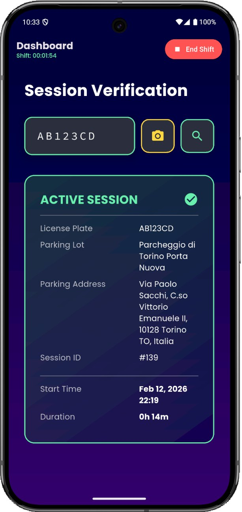
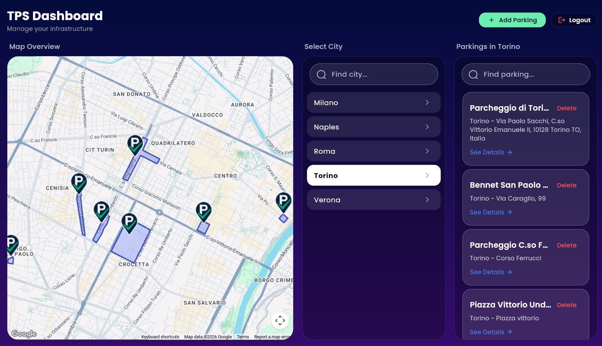

停车用户

找位、付费，安心停车。
浏览附近停车区域，选择车辆和时长，查看费用并启动停车会话，随时查看与续停。
体验停车用户端一次停车，三个视角
移动鼠标，看看不同角色。点击卡片，进入原版界面体验。
演示登录：demo@tps.example / Demo123!
浏览附近停车区域，选择车辆和时长，查看费用并启动停车会话，随时查看与续停。
体验停车用户端
开始巡查班次，查询车辆是否处于有效停车或宽限期，并为过期停车记录模拟违规通知。
体验巡查员端
维护停车区域和车位，配置日间与夜间费率，通过价格模拟、会话与占用统计观察运营情况。
体验管理员端三端使用同一份本地演示数据，可随时切换视角。